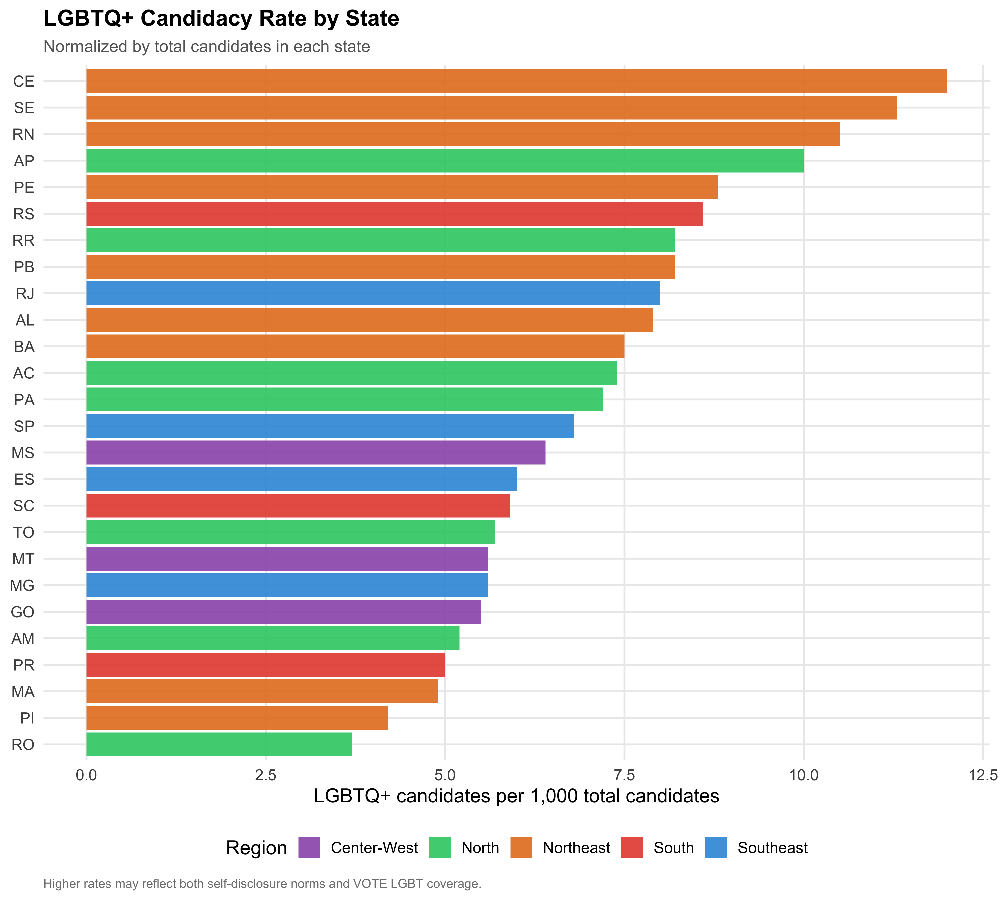
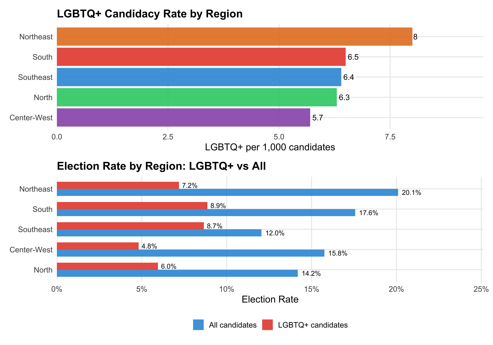
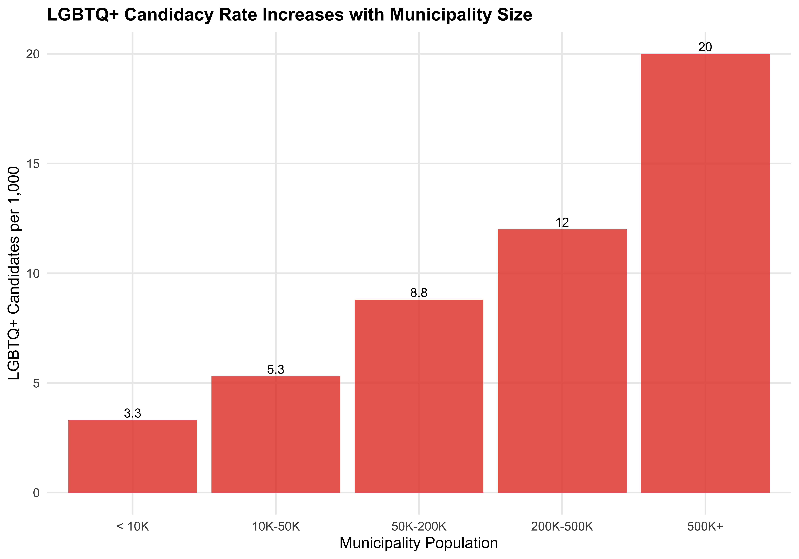
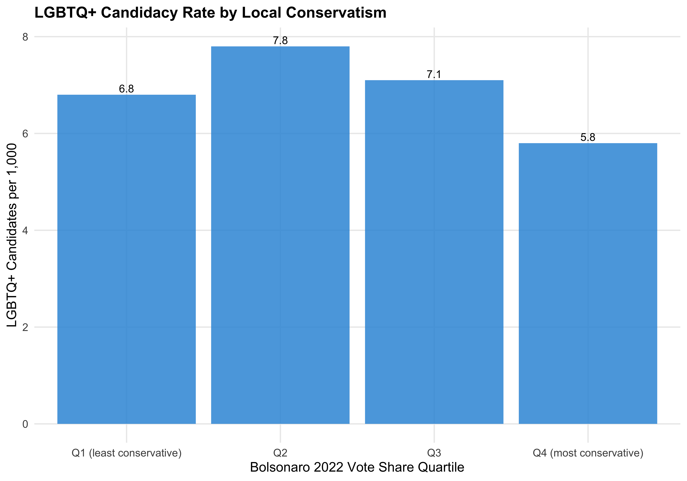
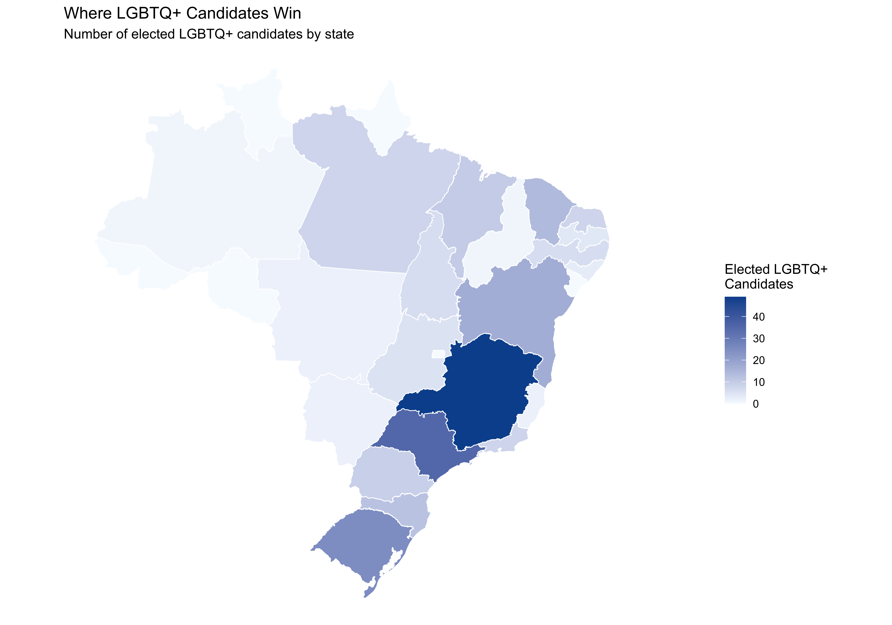

Show code
source(here::here("code", "00_setup.R"))
library(sf)
df <- readRDS(paths$analysis_full_rds)
muni_sf <- readRDS(paths$geo_muni_rds)
state_sf <- readRDS(paths$geo_state_rds)Where Do LGBTQ+ Candidates Run?
source(here::here("code", "00_setup.R"))
library(sf)
df <- readRDS(paths$analysis_full_rds)
muni_sf <- readRDS(paths$geo_muni_rds)
state_sf <- readRDS(paths$geo_state_rds)Brazil is a country of continental proportions, with 5,570 municipalities spanning everything from Amazonian riverine communities to the megalopolis of Sao Paulo. LGBTQ+ visibility and acceptance vary enormously across this geography — shaped by urbanization, religion, regional political culture, and local institutional capacity.
This chapter maps the spatial distribution of LGBTQ+ candidates in the 2024 municipal elections, looking for concentration patterns, regional disparities, and the urban/rural dimension.
We begin by counting how many LGBTQ+ candidates ran in each of Brazil’s municipalities. The municipality-level count is the raw number of candidates identified as LGBTQ+ (via TSE self-declaration and/or VOTE LGBT matching) within each of the 5,570 municipalities.
# Aggregate candidate counts per municipality
muni_counts <- df %>%
mutate(geobr_code = as.numeric(geobr_code)) %>%
group_by(geobr_code) %>%
summarise(
n_candidates = n(),
n_lgbtq = sum(lgbtq_candidate, na.rm = TRUE),
n_trans = sum(trans_candidate, na.rm = TRUE),
lgbtq_share = if_else(n_candidates > 0, n_lgbtq / n_candidates, 0),
.groups = "drop"
)
# Join to shapefile
muni_map <- muni_sf %>%
left_join(muni_counts, by = c("code_muni" = "geobr_code")) %>%
mutate(
n_lgbtq = replace_na(n_lgbtq, 0),
n_trans = replace_na(n_trans, 0),
n_candidates = replace_na(n_candidates, 0),
lgbtq_share = replace_na(lgbtq_share, 0),
lgbtq_cat = case_when(
n_lgbtq == 0 ~ "0",
n_lgbtq == 1 ~ "1",
n_lgbtq >= 2 & n_lgbtq <= 5 ~ "2-5",
n_lgbtq >= 6 ~ "6+"
),
lgbtq_cat = factor(lgbtq_cat, levels = c("0", "1", "2-5", "6+"))
)p_count <- ggplot(muni_map) +
geom_sf(aes(fill = lgbtq_cat), color = NA, linewidth = 0) +
geom_sf(data = state_sf, fill = NA, color = "gray30", linewidth = 0.3) +
scale_fill_manual(
values = c("0" = "#F0F0F0", "1" = "#FDBE85", "2-5" = "#E6550D", "6+" = "#A63603"),
name = "N LGBTQ+ candidates",
na.value = "#F0F0F0"
) +
labs(
title = "Number of LGBTQ+ Candidates by Municipality",
subtitle = "Brazil's 2024 municipal elections",
caption = "Source: TSE self-disclosure + VOTE LGBT matching. Gray lines = state borders."
) +
theme_void() +
theme(
plot.title = element_text(face = "bold", size = 16),
plot.subtitle = element_text(size = 12, color = "gray40"),
plot.caption = element_text(size = 9, color = "gray50", hjust = 0),
legend.position = "bottom"
)
p_count
save_figure(p_count, "04_map_lgbtq_count_muni", width = 12, height = 8)
# Summary statistics
n_muni_any <- sum(muni_counts$n_lgbtq > 0, na.rm = TRUE)
n_muni_zero <- sum(muni_counts$n_lgbtq == 0 | is.na(muni_counts$n_lgbtq), na.rm = TRUE)Out of 5,570 municipalities, 1,449 had at least one LGBTQ+ candidate, while 4,116 had none. Most LGBTQ+ candidacies are concentrated in a relatively small number of urban centers.
LGBTQ+ share is the proportion of a municipality’s candidates who are identified as LGBTQ+. The choropleth below maps this share across all municipalities, distinguishing between those with zero LGBTQ+ candidates and those with progressively higher shares.
# Create share categories (only for municipalities with candidates)
muni_map <- muni_map %>%
mutate(
share_cat = case_when(
n_candidates == 0 ~ "No candidates",
lgbtq_share == 0 ~ "0%",
lgbtq_share > 0 & lgbtq_share <= 0.01 ~ "0.1-1%",
lgbtq_share > 0.01 & lgbtq_share <= 0.03 ~ "1-3%",
lgbtq_share > 0.03 ~ ">3%"
),
share_cat = factor(share_cat,
levels = c("No candidates", "0%", "0.1-1%", "1-3%", ">3%"))
)
p_share <- ggplot(muni_map) +
geom_sf(aes(fill = share_cat), color = NA, linewidth = 0) +
geom_sf(data = state_sf, fill = NA, color = "gray30", linewidth = 0.3) +
scale_fill_manual(
values = c(
"No candidates" = "#F0F0F0",
"0%" = "#DEEBF7",
"0.1-1%" = "#9ECAE1",
"1-3%" = "#4292C6",
">3%" = "#084594"
),
name = "LGBTQ+ share",
na.value = "#F0F0F0"
) +
labs(
title = "LGBTQ+ Candidate Share by Municipality",
subtitle = "Percentage of all candidates who are LGBTQ+",
caption = "Source: TSE self-disclosure + VOTE LGBT matching."
) +
theme_void() +
theme(
plot.title = element_text(face = "bold", size = 16),
plot.subtitle = element_text(size = 12, color = "gray40"),
plot.caption = element_text(size = 9, color = "gray50", hjust = 0),
legend.position = "bottom"
)
p_share
save_figure(p_share, "04_map_lgbtq_share_muni", width = 12, height = 8)
The table below lists the 20 municipalities with the highest absolute number of LGBTQ+ candidates, along with total candidates, trans candidates, and the LGBTQ+ share.
top_munis <- muni_counts %>%
filter(n_lgbtq > 0) %>%
arrange(desc(n_lgbtq)) %>%
head(20) %>%
left_join(
muni_sf %>% st_drop_geometry() %>% select(code_muni, name_muni, abbrev_state),
by = c("geobr_code" = "code_muni")
) %>%
mutate(
lgbtq_share_fmt = format_pct(lgbtq_share),
rank = row_number()
) %>%
select(
Rank = rank,
Municipality = name_muni,
State = abbrev_state,
`Total Cand.` = n_candidates,
`LGBTQ+ Cand.` = n_lgbtq,
`Trans Cand.` = n_trans,
`LGBTQ+ %` = lgbtq_share_fmt
)
kable(top_munis, align = c("r", "l", "c", "r", "r", "r", "r"))| Rank | Municipality | State | Total Cand. | LGBTQ+ Cand. | Trans Cand. | LGBTQ+ % |
|---|---|---|---|---|---|---|
| 1 | Rio de Janeiro | RJ | 1046 | 28 | 3 | 2.7% |
| 2 | Salvador | BA | 866 | 27 | 3 | 3.1% |
| 3 | Belo Horizonte | MG | 898 | 27 | 5 | 3.0% |
| 4 | Porto Alegre | RS | 538 | 27 | 8 | 5.0% |
| 5 | São Paulo | SP | 1040 | 26 | 8 | 2.5% |
| 6 | Couto Magalhães | TO | 54 | 22 | 0 | 40.7% |
| 7 | Fortaleza | CE | 793 | 20 | 2 | 2.5% |
| 8 | Uberlândia | MG | 549 | 19 | 5 | 3.5% |
| 9 | Curitiba | PR | 776 | 19 | 1 | 2.4% |
| 10 | Florianópolis | SC | 327 | 18 | 3 | 5.5% |
| 11 | Ijuí | RS | 132 | 18 | 15 | 13.6% |
| 12 | Manaus | AM | 851 | 17 | 3 | 2.0% |
| 13 | Belém | PA | 606 | 14 | 3 | 2.3% |
| 14 | Natal | RN | 450 | 14 | 3 | 3.1% |
| 15 | Aracaju | SE | 508 | 14 | 7 | 2.8% |
| 16 | Paço do Lumiar | MA | 283 | 12 | 0 | 4.2% |
| 17 | São Luís | MA | 537 | 12 | 0 | 2.2% |
| 18 | Ribeirão Preto | SP | 426 | 12 | 3 | 2.8% |
| 19 | Goiânia | GO | 709 | 12 | 2 | 1.7% |
| 20 | Gravatá | PE | 228 | 11 | 1 | 4.8% |
The composition of the top 20 municipalities reveals the degree to which LGBTQ+ candidacies concentrate in state capitals and large metropolitan centers, consistent with the sociological expectation that urban environments facilitate LGBTQ+ visibility and political mobilization.
The table below aggregates LGBTQ+ candidacy to the state level, reporting the total number of candidates, LGBTQ+ and trans counts, the LGBTQ+ rate per 1,000 candidates (a size-normalized measure), the LGBTQ+ share, and the LGBTQ+ election rate within each state.
state_summary <- df %>%
group_by(state_abbrev) %>%
summarise(
n_total = n(),
n_lgbtq = sum(lgbtq_candidate, na.rm = TRUE),
n_trans = sum(trans_candidate, na.rm = TRUE),
lgbtq_rate_1k = round(n_lgbtq / n_total * 1000, 1),
lgbtq_share = n_lgbtq / n_total,
election_rate_lgbtq = if_else(
n_lgbtq > 0,
mean(elected[lgbtq_candidate], na.rm = TRUE),
NA_real_
),
.groups = "drop"
) %>%
mutate(region = state_to_region(state_abbrev)) %>%
arrange(desc(n_lgbtq))
state_summary %>%
mutate(
lgbtq_share = format_pct(lgbtq_share),
election_rate_lgbtq = if_else(
is.na(election_rate_lgbtq), "---",
format_pct(election_rate_lgbtq)
)
) %>%
select(
State = state_abbrev,
Region = region,
`Total Cand.` = n_total,
`LGBTQ+` = n_lgbtq,
Trans = n_trans,
`LGBTQ+ per 1K` = lgbtq_rate_1k,
`LGBTQ+ %` = lgbtq_share,
`LGBTQ+ Elect. Rate` = election_rate_lgbtq
) %>%
kable(align = c("l", "l", "r", "r", "r", "r", "r", "r"))| State | Region | Total Cand. | LGBTQ+ | Trans | LGBTQ+ per 1K | LGBTQ+ % | LGBTQ+ Elect. Rate |
|---|---|---|---|---|---|---|---|
| SP | Southeast | 78361 | 529 | 109 | 6.8 | 0.7% | 7.1% |
| MG | Southeast | 73454 | 415 | 73 | 5.6 | 0.6% | 12.3% |
| BA | Northeast | 35205 | 265 | 38 | 7.5 | 0.8% | 6.9% |
| RS | South | 29040 | 251 | 55 | 8.6 | 0.9% | 10.2% |
| PR | South | 34021 | 170 | 40 | 5.0 | 0.5% | 5.7% |
| CE | Northeast | 13221 | 159 | 35 | 12.0 | 1.2% | 9.1% |
| PE | Northeast | 16069 | 141 | 34 | 8.8 | 0.9% | 5.7% |
| RJ | Southeast | 17590 | 141 | 28 | 8.0 | 0.8% | 5.8% |
| PA | North | 18095 | 130 | 24 | 7.2 | 0.7% | 7.0% |
| SC | South | 19620 | 116 | 15 | 5.9 | 0.6% | 10.3% |
| GO | Center-West | 19979 | 109 | 13 | 5.5 | 0.5% | 5.4% |
| PB | Northeast | 10242 | 84 | 27 | 8.2 | 0.8% | 5.0% |
| MA | Northeast | 16839 | 83 | 13 | 4.9 | 0.5% | 13.3% |
| RN | Northeast | 7690 | 81 | 15 | 10.5 | 1.1% | 10.0% |
| SE | Northeast | 5586 | 63 | 20 | 11.3 | 1.1% | 0.0% |
| MT | Center-West | 11104 | 62 | 13 | 5.6 | 0.6% | 3.4% |
| ES | Southeast | 9861 | 59 | 14 | 6.0 | 0.6% | 3.4% |
| MS | Center-West | 7372 | 47 | 7 | 6.4 | 0.6% | 5.4% |
| AL | Northeast | 5834 | 46 | 6 | 7.9 | 0.8% | 6.5% |
| AM | North | 8114 | 42 | 14 | 5.2 | 0.5% | 2.6% |
| TO | North | 7196 | 41 | 4 | 5.7 | 0.6% | 15.0% |
| PI | Northeast | 8978 | 38 | 4 | 4.2 | 0.4% | 2.9% |
| RO | North | 4878 | 18 | 5 | 3.7 | 0.4% | 0.0% |
| AC | North | 2311 | 17 | 1 | 7.4 | 0.7% | 0.0% |
| AP | North | 1596 | 16 | 5 | 10.0 | 1.0% | 0.0% |
| RR | North | 1345 | 11 | 2 | 8.2 | 0.8% | 0.0% |
state_summary %>%
ggplot(aes(x = reorder(state_abbrev, lgbtq_rate_1k),
y = lgbtq_rate_1k, fill = region)) +
geom_col(alpha = 0.9) +
coord_flip() +
scale_fill_manual(values = pal_region, name = "Region") +
labs(
x = NULL,
y = "LGBTQ+ candidates per 1,000 total candidates",
title = "LGBTQ+ Candidacy Rate by State",
subtitle = "Normalized by total candidates in each state",
caption = "Higher rates may reflect both self-disclosure norms and VOTE LGBT coverage."
)
The table below aggregates to Brazil’s five macro-regions, reporting total and LGBTQ+ candidate counts, the LGBTQ+ rate per 1,000 candidates, and election rates for all candidates and LGBTQ+ candidates separately.
region_summary <- df %>%
filter(!is.na(region)) %>%
group_by(region) %>%
summarise(
n_total = n(),
n_lgbtq = sum(lgbtq_candidate, na.rm = TRUE),
n_trans = sum(trans_candidate, na.rm = TRUE),
lgbtq_share = n_lgbtq / n_total,
lgbtq_rate_1k = round(n_lgbtq / n_total * 1000, 1),
elect_rate_all = mean(elected, na.rm = TRUE),
elect_rate_lgbtq = mean(elected[lgbtq_candidate], na.rm = TRUE),
.groups = "drop"
) %>%
arrange(desc(n_lgbtq))
region_summary %>%
mutate(
lgbtq_share = format_pct(lgbtq_share),
elect_rate_all = format_pct(elect_rate_all),
elect_rate_lgbtq = format_pct(elect_rate_lgbtq)
) %>%
select(
Region = region,
`Total Cand.` = n_total,
`LGBTQ+` = n_lgbtq,
Trans = n_trans,
`LGBTQ+ %` = lgbtq_share,
`LGBTQ+ per 1K` = lgbtq_rate_1k,
`Elect. Rate (All)` = elect_rate_all,
`Elect. Rate (LGBTQ+)` = elect_rate_lgbtq
) %>%
kable(align = c("l", "r", "r", "r", "r", "r", "r", "r"))| Region | Total Cand. | LGBTQ+ | Trans | LGBTQ+ % | LGBTQ+ per 1K | Elect. Rate (All) | Elect. Rate (LGBTQ+) |
|---|---|---|---|---|---|---|---|
| Southeast | 179266 | 1144 | 224 | 0.6% | 6.4 | 12.0% | 8.7% |
| Northeast | 119664 | 960 | 192 | 0.8% | 8.0 | 20.1% | 7.2% |
| South | 82681 | 537 | 110 | 0.6% | 6.5 | 17.6% | 8.9% |
| North | 43535 | 275 | 55 | 0.6% | 6.3 | 14.2% | 6.0% |
| Center-West | 38455 | 218 | 33 | 0.6% | 5.7 | 15.8% | 4.8% |
# Create a combined plot: rate per 1k and election rate side by side
p_region_rate <- region_summary %>%
ggplot(aes(x = reorder(region, lgbtq_rate_1k), y = lgbtq_rate_1k, fill = region)) +
geom_col(alpha = 0.9, show.legend = FALSE) +
geom_text(aes(label = lgbtq_rate_1k), hjust = -0.2, size = 4) +
coord_flip() +
scale_fill_manual(values = pal_region) +
scale_y_continuous(expand = expansion(mult = c(0, 0.2))) +
labs(x = NULL, y = "LGBTQ+ per 1,000 candidates",
title = "LGBTQ+ Candidacy Rate by Region")
p_region_elect <- region_summary %>%
select(region, `All candidates` = elect_rate_all, `LGBTQ+ candidates` = elect_rate_lgbtq) %>%
pivot_longer(-region, names_to = "group", values_to = "rate") %>%
ggplot(aes(x = reorder(region, rate), y = rate, fill = group)) +
geom_col(position = "dodge", alpha = 0.9, width = 0.7) +
geom_text(aes(label = format_pct(rate)),
position = position_dodge(width = 0.7), hjust = -0.2, size = 3.5) +
coord_flip() +
scale_fill_manual(values = c("All candidates" = "#3498DB", "LGBTQ+ candidates" = "#E74C3C"),
name = NULL) +
scale_y_continuous(labels = percent, expand = expansion(mult = c(0, 0.25))) +
labs(x = NULL, y = "Election Rate",
title = "Election Rate by Region: LGBTQ+ vs All")
p_region_rate / p_region_elect
save_figure(p_region_rate / p_region_elect, "04_region_rates", width = 10, height = 10)
The Southeast — anchored by Sao Paulo and Rio de Janeiro — has the largest absolute number of LGBTQ+ candidates, reflecting its population weight. However, when normalized per 1,000 candidates, the pattern may shift. The Northeast, with the largest overall candidate pool, shows a distinct LGBTQ+ candidacy profile shaped by both the region’s political dynamics and the reach of VOTE LGBT identification efforts.
We lack direct population or urbanization data at the municipality level in this dataset. However, the total number of candidates in a municipality serves as a rough proxy for its size: larger municipalities field more candidates.
We compare municipalities that had at least one LGBTQ+ candidate to those with zero, using the total candidate count as a size proxy. The table reports the number of municipalities, mean and median candidate counts, and total candidates for each group.
urban_rural <- muni_counts %>%
mutate(has_lgbtq = n_lgbtq > 0) %>%
group_by(has_lgbtq) %>%
summarise(
n_municipalities = n(),
mean_candidates = round(mean(n_candidates, na.rm = TRUE), 1),
median_candidates = median(n_candidates, na.rm = TRUE),
total_candidates = sum(n_candidates, na.rm = TRUE),
.groups = "drop"
) %>%
mutate(
has_lgbtq = if_else(has_lgbtq, "1+ LGBTQ+ candidates", "0 LGBTQ+ candidates")
)
urban_rural %>%
rename(
Group = has_lgbtq,
`N Municipalities` = n_municipalities,
`Mean Candidates` = mean_candidates,
`Median Candidates` = median_candidates,
`Total Candidates` = total_candidates
) %>%
kable(align = c("l", "r", "r", "r", "r"))| Group | N Municipalities | Mean Candidates | Median Candidates | Total Candidates |
|---|---|---|---|---|
| 0 LGBTQ+ candidates | 4116 | 61.9 | 51 | 254768 |
| 1+ LGBTQ+ candidates | 1449 | 144.1 | 110 | 208833 |
muni_counts %>%
mutate(has_lgbtq = if_else(n_lgbtq > 0, "Has LGBTQ+ candidate(s)", "No LGBTQ+ candidates")) %>%
filter(n_candidates > 0) %>%
ggplot(aes(x = n_candidates, fill = has_lgbtq)) +
geom_histogram(binwidth = 20, alpha = 0.7, position = "identity", color = "white") +
scale_x_continuous(limits = c(0, 500)) +
scale_fill_manual(values = c("Has LGBTQ+ candidate(s)" = "#E74C3C",
"No LGBTQ+ candidates" = "#3498DB"),
name = NULL) +
labs(
x = "Total Candidates in Municipality (capped at 500 for visibility)",
y = "Number of Municipalities",
title = "Municipality Size: With vs Without LGBTQ+ Candidates",
subtitle = "Distribution of total candidates per municipality, by presence of LGBTQ+ candidates"
)
The comparison of municipality sizes (proxied by total candidate counts) between places with and without LGBTQ+ candidates reveals the degree to which LGBTQ+ candidacies concentrate in larger, more urbanized settings — where social acceptance and community infrastructure may facilitate political participation.
The previous sections mapped where LGBTQ+ candidates run. This section connects candidacy patterns to municipality-level characteristics: population size, economic development, and the local political environment measured by Bolsonaro’s 2022 first-round vote share.
muni_pop_counts <- df %>%
filter(!is.na(pop_bracket)) %>%
group_by(pop_bracket) %>%
summarise(n_munis = n_distinct(geobr_code), .groups = "drop")
pop_summary <- df %>%
filter(!is.na(pop_bracket)) %>%
group_by(pop_bracket) %>%
summarise(
n_candidates = n(),
n_lgbtq = sum(lgbtq_candidate),
rate_per_1k = round(n_lgbtq / n_candidates * 1000, 1),
elected_lgbtq = sum(lgbtq_candidate & elected, na.rm = TRUE),
election_rate = round(elected_lgbtq / n_lgbtq * 100, 1),
.groups = "drop"
) %>%
left_join(muni_pop_counts, by = "pop_bracket")
pop_summary %>%
select(`Population Bracket` = pop_bracket,
Municipalities = n_munis,
`Total Candidates` = n_candidates,
`LGBTQ+ Candidates` = n_lgbtq,
`Rate per 1,000` = rate_per_1k,
`LGBTQ+ Election Rate (%)` = election_rate) %>%
kable(align = c("l", rep("r", 5)), format.args = list(big.mark = ","))| Population Bracket | Municipalities | Total Candidates | LGBTQ+ Candidates | Rate per 1,000 | LGBTQ+ Election Rate (%) |
|---|---|---|---|---|---|
| < 10K | 2,516 | 112,107 | 371 | 3.3 | 11.9 |
| 10K-50K | 2,390 | 198,901 | 1,049 | 5.3 | 8.0 |
| 50K-200K | 505 | 94,489 | 832 | 8.8 | 4.9 |
| 200K-500K | 110 | 34,611 | 414 | 12.0 | 6.5 |
| 500K+ | 43 | 23,230 | 464 | 20.0 | 6.7 |
ggplot(pop_summary, aes(x = pop_bracket, y = rate_per_1k)) +
geom_col(fill = pal_lgbtq["LGBTQ+"], alpha = 0.85) +
geom_text(aes(label = rate_per_1k), vjust = -0.3, size = 4) +
labs(
x = "Municipality Population",
y = "LGBTQ+ Candidates per 1,000",
title = "LGBTQ+ Candidacy Rate Increases with Municipality Size"
)
Bolsonaro’s 2022 first-round presidential vote share serves as a proxy for local electorate conservatism. Municipalities are grouped into quartiles from least (Q1) to most (Q4) conservative.
bolso_summary <- df %>%
filter(!is.na(bolsonaro_quartile)) %>%
group_by(bolsonaro_quartile) %>%
summarise(
n_candidates = n(),
n_lgbtq = sum(lgbtq_candidate),
rate_per_1k = round(n_lgbtq / n_candidates * 1000, 1),
mean_bolso = round(mean(bolsonaro_share, na.rm = TRUE), 1),
elected_lgbtq = sum(lgbtq_candidate & elected, na.rm = TRUE),
election_rate = round(elected_lgbtq / n_lgbtq * 100, 1),
.groups = "drop"
)
bolso_summary %>%
select(`Quartile` = bolsonaro_quartile,
`Mean Bolsonaro %` = mean_bolso,
`Total Candidates` = n_candidates,
`LGBTQ+ Candidates` = n_lgbtq,
`Rate per 1,000` = rate_per_1k,
`LGBTQ+ Election Rate (%)` = election_rate) %>%
kable(align = c("l", rep("r", 5)), format.args = list(big.mark = ","))| Quartile | Mean Bolsonaro % | Total Candidates | LGBTQ+ Candidates | Rate per 1,000 | LGBTQ+ Election Rate (%) |
|---|---|---|---|---|---|
| Q1 (least conservative) | 21.5 | 102,937 | 697 | 6.8 | 8.2 |
| Q2 | 39.7 | 102,891 | 799 | 7.8 | 8.5 |
| Q3 | 50.7 | 103,006 | 729 | 7.1 | 7.1 |
| Q4 (most conservative) | 61.5 | 102,756 | 596 | 5.8 | 5.2 |
ggplot(bolso_summary, aes(x = bolsonaro_quartile, y = rate_per_1k)) +
geom_col(fill = pal_ideology["Right"], alpha = 0.85) +
geom_text(aes(label = rate_per_1k), vjust = -0.3, size = 4) +
labs(
x = "Bolsonaro 2022 Vote Share Quartile",
y = "LGBTQ+ Candidates per 1,000",
title = "LGBTQ+ Candidacy Rate by Local Conservatism"
)
The relationship between electorate conservatism and LGBTQ+ candidacy rates is consistent with theoretical expectations: localities with more conservative electorates have fewer LGBTQ+ candidates per capita, possibly reflecting higher perceived costs of disclosure and reduced party incentives to recruit LGBTQ+ candidates.
scatter_data <- df %>%
filter(!is.na(populacao_2022)) %>%
group_by(geobr_code, region, populacao_2022) %>%
summarise(
n_cand = n(),
n_lgbtq = sum(lgbtq_candidate),
.groups = "drop"
) %>%
filter(n_lgbtq > 0) %>%
mutate(lgbtq_share = n_lgbtq / n_cand * 100)
ggplot(scatter_data, aes(x = populacao_2022, y = lgbtq_share, color = region)) +
geom_point(alpha = 0.4, size = 1.5) +
geom_smooth(aes(group = 1), method = "loess", color = "black",
linewidth = 1, se = TRUE, alpha = 0.2) +
scale_x_log10(labels = scales::label_number(scale_cut = scales::cut_short_scale())) +
scale_color_manual(values = pal_region) +
labs(
x = "Municipality Population (log scale)",
y = "LGBTQ+ Candidate Share (%)",
color = "Region",
title = "LGBTQ+ Share Increases with Municipality Size",
subtitle = "Each dot = one municipality with at least one LGBTQ+ candidate"
)
The Lorenz curve quantifies how concentrated LGBTQ+ candidates are across municipalities. Municipalities are sorted from fewest to most LGBTQ+ candidates on the x-axis, and the y-axis shows the cumulative share of all LGBTQ+ candidates. If candidates were evenly distributed, the curve would follow the 45-degree line of equality. Greater curvature indicates more concentration. The Gini coefficient (ranging from 0 to 1) summarizes the area between the Lorenz curve and the equality line, where higher values indicate greater concentration.
# Sort municipalities by LGBTQ+ count and compute cumulative shares
lorenz_data <- muni_counts %>%
filter(!is.na(n_lgbtq)) %>%
arrange(n_lgbtq) %>%
mutate(
cum_munis = row_number() / n(),
cum_lgbtq = cumsum(n_lgbtq) / sum(n_lgbtq)
)
# Compute Gini coefficient (area between Lorenz curve and equality line)
gini <- 1 - 2 * sum(
diff(lorenz_data$cum_munis) *
(head(lorenz_data$cum_lgbtq, -1) + tail(lorenz_data$cum_lgbtq, -1)) / 2
)
# Find key concentration stats
pct_munis_80 <- lorenz_data %>%
filter(cum_lgbtq >= 0.80) %>%
slice_min(cum_lgbtq) %>%
pull(cum_munis)
ggplot(lorenz_data, aes(x = cum_munis, y = cum_lgbtq)) +
geom_line(color = "#E74C3C", linewidth = 1.2) +
geom_abline(slope = 1, intercept = 0, linetype = "dashed", color = "gray50") +
geom_ribbon(aes(ymin = cum_munis, ymax = cum_lgbtq), alpha = 0.15, fill = "#E74C3C") +
annotate("text", x = 0.35, y = 0.85,
label = paste0("Gini = ", round(gini, 3)),
size = 5, fontface = "bold", color = "#E74C3C") +
annotate("text", x = 0.35, y = 0.78,
label = paste0(round((1 - pct_munis_80) * 100, 0),
"% of municipalities account\nfor 80% of LGBTQ+ candidates"),
size = 3.8, color = "gray30") +
scale_x_continuous(labels = percent, expand = c(0, 0.01)) +
scale_y_continuous(labels = percent, expand = c(0, 0.01)) +
labs(
x = "Cumulative % of municipalities (sorted by LGBTQ+ count)",
y = "Cumulative % of LGBTQ+ candidates",
title = "Geographic Concentration of LGBTQ+ Candidates",
subtitle = "Lorenz curve across 5,570 municipalities",
caption = "Dashed line = perfect equality. Shaded area = Gini coefficient."
)
save_figure(last_plot(), "04_lorenz_curve", width = 7, height = 6)
A Gini coefficient of 0.846 indicates very high geographic concentration. LGBTQ+ candidates are overwhelmingly clustered in a small number of municipalities, leaving the vast majority of Brazilian cities without any identified LGBTQ+ political representation.
Trans candidates represent a small but politically significant subgroup. Their geographic distribution warrants specific attention. The point map below shows the location and count of trans candidates at the municipality level, while subsequent tables disaggregate by state.
# Get centroids of municipalities with trans candidates for a point map
trans_munis <- muni_map %>%
filter(n_trans > 0)
trans_centroids <- trans_munis %>%
st_centroid()
p_trans <- ggplot() +
geom_sf(data = state_sf, fill = "#F5F5F5", color = "gray60", linewidth = 0.3) +
geom_sf(data = trans_centroids,
aes(size = n_trans),
color = "#F39C12", alpha = 0.7) +
scale_size_continuous(
range = c(1.5, 8),
name = "N trans candidates",
breaks = c(1, 2, 5, 10, 20)
) +
labs(
title = "Where Trans Candidates Run",
subtitle = "Each point is a municipality with at least one trans candidate",
caption = "Source: TSE self-disclosure + VOTE LGBT matching. Point size = number of trans candidates."
) +
theme_void() +
theme(
plot.title = element_text(face = "bold", size = 16),
plot.subtitle = element_text(size = 12, color = "gray40"),
plot.caption = element_text(size = 9, color = "gray50", hjust = 0),
legend.position = "bottom"
)
p_trans
save_figure(p_trans, "04_map_trans_candidates", width = 12, height = 8)df %>%
filter(trans_candidate) %>%
count(state_abbrev, sort = TRUE) %>%
left_join(
df %>% count(state_abbrev, name = "total"),
by = "state_abbrev"
) %>%
mutate(
region = state_to_region(state_abbrev),
rate_per_1k = round(n / total * 1000, 2),
pct = format_pct(n / total)
) %>%
select(
State = state_abbrev,
Region = region,
`Trans Cand.` = n,
`Total Cand.` = total,
`Per 1K` = rate_per_1k,
`% of Total` = pct
) %>%
kable(align = c("l", "l", "r", "r", "r", "r"))| State | Region | Trans Cand. | Total Cand. | Per 1K | % of Total |
|---|---|---|---|---|---|
| SP | Southeast | 109 | 78361 | 1.39 | 0.1% |
| MG | Southeast | 73 | 73454 | 0.99 | 0.1% |
| RS | South | 55 | 29040 | 1.89 | 0.2% |
| PR | South | 40 | 34021 | 1.18 | 0.1% |
| BA | Northeast | 38 | 35205 | 1.08 | 0.1% |
| CE | Northeast | 35 | 13221 | 2.65 | 0.3% |
| PE | Northeast | 34 | 16069 | 2.12 | 0.2% |
| RJ | Southeast | 28 | 17590 | 1.59 | 0.2% |
| PB | Northeast | 27 | 10242 | 2.64 | 0.3% |
| PA | North | 24 | 18095 | 1.33 | 0.1% |
| SE | Northeast | 20 | 5586 | 3.58 | 0.4% |
| RN | Northeast | 15 | 7690 | 1.95 | 0.2% |
| SC | South | 15 | 19620 | 0.76 | 0.1% |
| AM | North | 14 | 8114 | 1.73 | 0.2% |
| ES | Southeast | 14 | 9861 | 1.42 | 0.1% |
| GO | Center-West | 13 | 19979 | 0.65 | 0.1% |
| MA | Northeast | 13 | 16839 | 0.77 | 0.1% |
| MT | Center-West | 13 | 11104 | 1.17 | 0.1% |
| MS | Center-West | 7 | 7372 | 0.95 | 0.1% |
| AL | Northeast | 6 | 5834 | 1.03 | 0.1% |
| AP | North | 5 | 1596 | 3.13 | 0.3% |
| RO | North | 5 | 4878 | 1.03 | 0.1% |
| PI | Northeast | 4 | 8978 | 0.45 | 0.0% |
| TO | North | 4 | 7196 | 0.56 | 0.1% |
| RR | North | 2 | 1345 | 1.49 | 0.1% |
| AC | North | 1 | 2311 | 0.43 | 0.0% |
# Aggregate trans counts to state level
trans_state <- df %>%
group_by(state_abbrev) %>%
summarise(
n_total = n(),
n_trans = sum(trans_candidate, na.rm = TRUE),
trans_rate_1k = round(n_trans / n_total * 1000, 2),
.groups = "drop"
)
# Join to state shapefile
state_trans_map <- state_sf %>%
left_join(trans_state, by = c("abbrev_state" = "state_abbrev"))
p_trans_state <- ggplot(state_trans_map) +
geom_sf(aes(fill = trans_rate_1k), color = "white", linewidth = 0.4) +
scale_fill_gradient(
low = "#FFF5EB",
high = "#D94801",
name = "Trans candidates\nper 1,000",
na.value = "#F0F0F0"
) +
labs(
title = "Trans Candidacy Rate by State",
subtitle = "Trans candidates per 1,000 total candidates",
caption = "Small absolute numbers; interpret with caution."
) +
theme_void() +
theme(
plot.title = element_text(face = "bold", size = 16),
plot.subtitle = element_text(size = 12, color = "gray40"),
plot.caption = element_text(size = 9, color = "gray50", hjust = 0),
legend.position = "bottom"
)
p_trans_state
save_figure(p_trans_state, "04_map_trans_state_rate", width = 10, height = 7)Trans candidates constitute a small fraction of all LGBTQ+ candidates, who themselves are a small fraction of all candidates. Geographic patterns at the municipality level should be interpreted cautiously. State-level aggregation is somewhat more stable, but rates based on very small denominators (e.g., states with 1-2 trans candidates) can be misleading.
The sections above map where LGBTQ+ candidates run. This section focuses on where they win.
elected_state <- df %>%
filter(lgbtq_candidate, elected) %>%
count(state_abbrev, name = "elected_lgbtq") %>%
left_join(
df %>% filter(lgbtq_candidate) %>% count(state_abbrev, name = "total_lgbtq"),
by = "state_abbrev"
) %>%
mutate(election_rate = round(elected_lgbtq / total_lgbtq * 100, 1)) %>%
arrange(desc(elected_lgbtq))
elected_state %>%
select(State = state_abbrev,
`LGBTQ+ Candidates` = total_lgbtq,
`Elected` = elected_lgbtq,
`Election Rate (%)` = election_rate) %>%
kable(align = c("l", "r", "r", "r"))| State | LGBTQ+ Candidates | Elected | Election Rate (%) |
|---|---|---|---|
| MG | 415 | 49 | 11.8 |
| SP | 529 | 35 | 6.6 |
| RS | 251 | 25 | 10.0 |
| BA | 265 | 17 | 6.4 |
| CE | 159 | 14 | 8.8 |
| SC | 116 | 12 | 10.3 |
| MA | 83 | 10 | 12.0 |
| PR | 170 | 9 | 5.3 |
| PA | 130 | 8 | 6.2 |
| RJ | 141 | 8 | 5.7 |
| RN | 81 | 8 | 9.9 |
| PE | 141 | 6 | 4.3 |
| TO | 41 | 6 | 14.6 |
| GO | 109 | 5 | 4.6 |
| PB | 84 | 4 | 4.8 |
| AL | 46 | 3 | 6.5 |
| ES | 59 | 2 | 3.4 |
| MS | 47 | 2 | 4.3 |
| MT | 62 | 2 | 3.2 |
| AM | 42 | 1 | 2.4 |
| PI | 38 | 1 | 2.6 |
elected_state_geo <- state_sf %>%
left_join(elected_state, by = c("abbrev_state" = "state_abbrev")) %>%
mutate(elected_lgbtq = replace_na(elected_lgbtq, 0))
ggplot(elected_state_geo) +
geom_sf(aes(fill = elected_lgbtq), color = "white", linewidth = 0.3) +
scale_fill_gradient(low = "#f7fbff", high = "#08519c",
name = "Elected LGBTQ+\nCandidates") +
labs(
title = "Where LGBTQ+ Candidates Win",
subtitle = "Number of elected LGBTQ+ candidates by state"
) +
theme_void() +
theme(legend.position = "right")
This chapter documents the geography of LGBTQ+ candidacies in Brazil’s 2024 municipal elections. Out of 5,570 municipalities, only 1,449 had at least one LGBTQ+ candidate, and the Lorenz curve and Gini coefficient quantify this concentration.
Municipality-level context reveals two key gradients: LGBTQ+ candidacy rates increase with population size and decrease with electorate conservatism (proxied by Bolsonaro’s 2022 vote share). The electoral success map shows where LGBTQ+ candidates not only run but win. Trans-specific maps show the spatial distribution of this smaller subgroup. These patterns have important implications for both representation and research design — any analysis of LGBTQ+ candidate outcomes must account for the non-random geographic selection into candidacy.